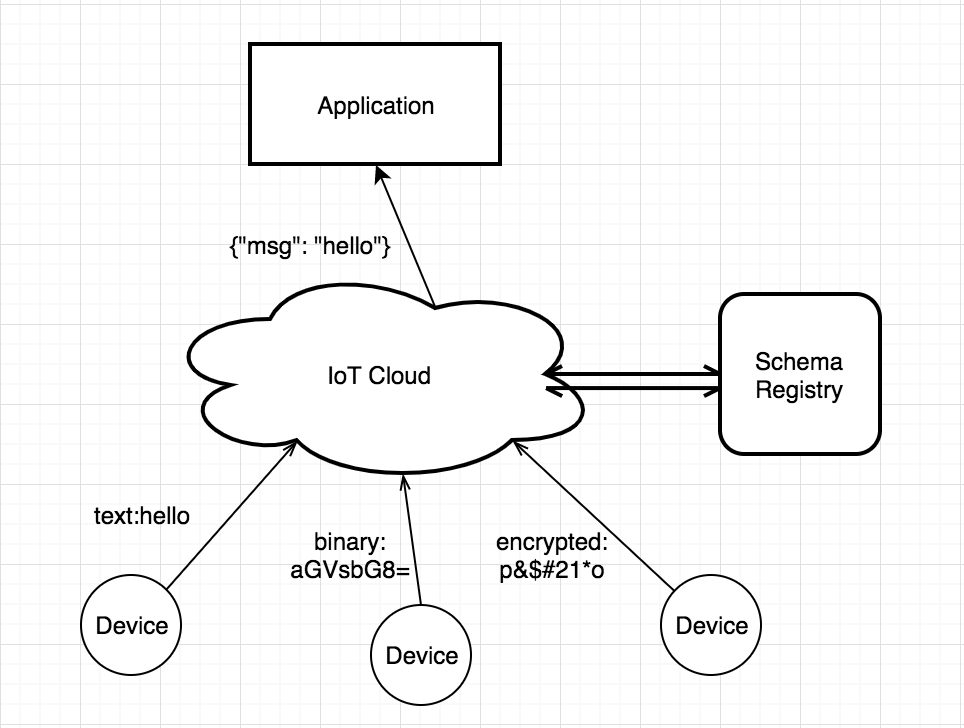
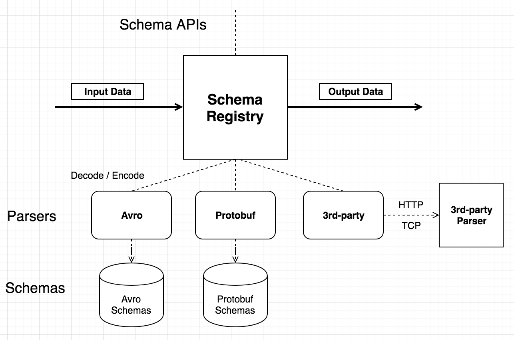
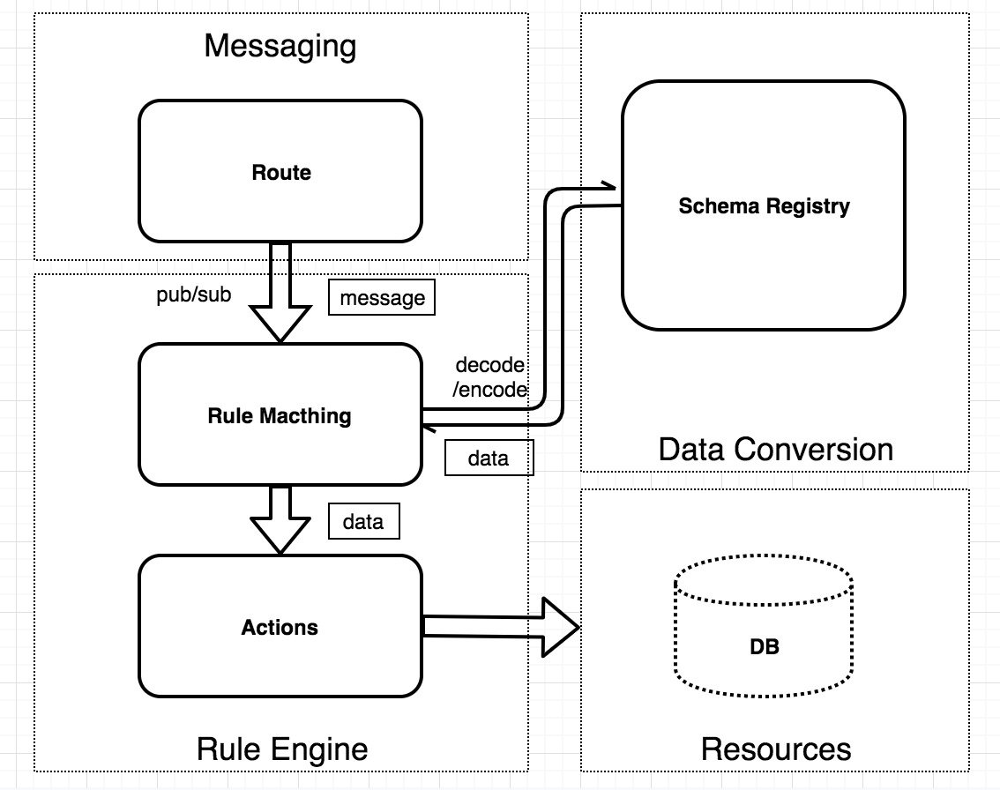

编解码
编解码（Schema Registry）介绍
物联网设备终端种类繁杂，各厂商使用的编码格式各异，所以在接入物联网平台的时候就产生了统一数据格式的需求，以便平台之上的应用进行设备管理。
Schema Registry 管理编解码使用的 Schema、处理编码或解码请求并返回结果。Schema Registry 配合规则引擎，可适配各种场景的设备接入和规则设计。
EMQ X Schema Registry 目前可支持三种格式的编解码：Avro，Protobuf，以及自定义编码。其中 Avro 和 Protobuf 是依赖 Schema 的数据格式，编码后的数据为二进制，解码后为 Map 格式。解码后的数据可直接被规则引擎和其他插件使用。用户自定义的 (3rd-party)编解码服务通过 HTTP 或 TCP 回调的方式，进行更加贴近业务需求的编解码。
Schema Registry 为 Avro 和 Protobuf 等内置编码格式维护 Schema 文本，但对于自定义编解码 (3rd-party) 格式，如需要，Schema 文本需由编解码服务自己维护
数据格式
下图展示了 Schema Registry 的一个应用案例。多个设备上报不同格式的数据，经过 Schema Registry 解码之后，变为统一的内部格式，然后转发给后台应用。

二进制格式支持
Schema Registry 数据格式包括 Avro 和 Protobuf。Avro 和 Protobuf 是依赖 Schema 的数据格式，编码后的数据为二进制，使用 Schema Registry 解码后的内部数据格式(Map，稍后讲解) 可直接被规则引擎和其他插件使用。此外 Schema Registry 支持用户自定义的 (3rd-party) 编解码服务，通过 HTTP 或 TCP 回调的方式，进行更加贴近业务需求的编解码。
架构设计
Schema Registry 为 Avro 和 Protobuf 等内置编码格式维护 Schema 文本，但对于自定义编解码 (3rd-party) 格式，如需要 Schema，Schema 文本需由编解码服务自己维护。Schema API 提供了通过 Schema Name 的添加、查询和删除操作。
Schema Registry 既可以解码，也可以编码。编码和解码时需要指定 Schema Name。

编码调用示例：参数为 Schema
schema_encode(SchemaName, Data) -> RawData
解码调用示例：
schema_decode(SchemaName, RawData) -> Data
常见的使用案例是，使用规则引擎来调用 Schema Registry 提供的编码和解码接口，然后将编码或解码后的数据作为后续动作的输入。
编解码 + 规则引擎
EMQ X 的消息处理层面可分为消息路由(Messaging)、规则引擎(Rule Engine)、数据格式转换(Data Conversion) 三个部分。
EMQ X 的 PUB/SUB 系统将消息路由到指定的主题。规则引擎可以灵活地配置数据的业务规则，按规则匹配消息，然后指定相应动作。数据格式转换发生在规则匹配的过程之前，先将数据转换为可参与规则匹配的 Map 格式，然后进行匹配。

规则引擎内部数据格式(Map)
规则引擎内部使用的数据格式为 Erlang Map，所以如果原数据内容为二进制或者其他格式，必须使用编解码函数(比如上面提到的 schema_decode 和 json_decode 函数) 将其转换为 Map。
Map 是一个 Key-Value 形式的数据结构，形如 #{key => value}。例如，user = #{id => 1, name => "Steve"} 定义了一个 id 为 1，name 为 "Steve" 的 user Map。
SQL 语句提供了 "." 操作符嵌套地提取和添加 Map 字段。下面是使用 SQL 语句对这个 Map 操作的示例:
SELECT user.id AS my_id
SQL 语句的筛选结果为 #{my_id => 1}。
JSON 编解码
规则引擎的 SQL 语句提供了对 JSON 格式字符串的编解码支持，将 JSON 字符串和 Map 格式相互转换的 SQL 函数为 json_decode() 和 json_encode():
SELECT json_decode(payload) AS p FROM "message.publish" WHERE p.x = p.y, topic =~ "t/#"
上面这个 SQL 语句将会匹配到 payload 内容为 JSON 字符串： {"x" = 1, "y" = 1} , 并且 topic 为 t/a 的 MQTT 消息。
json_decode(payload) as p 将 JSON 字符串解码为下面的 Map 数据结构，从而可以在 WHERE 子句中使用 p.x 和 p.y 使用 Map 中的字段：
#{
p => #{
x => 1,
y => 1
}
}
注意: AS 子句是必须的，将解码之后的数据赋值给某个Key，后面才能对其进行后续操作。
编解码实战
Protobuf 数据解析举例
规则需求
设备发布一个使用 Protobuf 编码的二进制消息，需要通过规则引擎匹配过后，将消息重新发布到与 "name" 字段相关的主题上。主题的格式为 "person/${name}"。
比如，将 "name" 字段为 "Shawn" 的消息重新发布到主题 "person/Shawn"。
创建 Schema
在 EMQ X 的 Dashboard 界面，使用下面的参数创建一个 Protobuf Schema:
名称：protobuf_person
编解码类型：protobuf
Schema：下面的 protobuf schema 定义了一个 Person 消息。
message Person {
required string name = 1;
required int32 id = 2;
optional string email = 3;
}
创建规则
使用刚才创建好的 Schema 来编写规则 SQL 语句：
SELECT
schema_decode('protobuf_person', payload, 'Person') as person, payload
FROM
"message.publish"
WHERE
topic =~ 't/#' and person.name = 'Shawn'
这里的关键点在于 schema_decode('protobuf_person', payload, 'Person'):
schema_decode函数将 payload 字段的内容按照 'protobuf_person' 这个 Schema 来做解码;as person将解码后的值保存到变量 "person" 里;- 最后一个参数
Person指明了 payload 中的消息的类型是 protobuf schema 里定义的 'Person' 类型。
然后使用以下参数添加动作：
- 动作类型：消息重新发布
- 目的主题：person/${person.name}
- 消息内容模板：${person}
这个动作将解码之后的 "person" 以 JSON 的格式发送到 person/${person.name} 这个主题。其中${person.name} 是个变量占位符，将在运行时被替换为消息内容中 "name" 字段的值。
设备端代码
规则创建好之后，就可以模拟数据进行测试了。
下面的代码使用 Python 语言填充了一个 Person 消息并编码为二进制数据，然后将其发送到 "t/1" 主题。详见 完整代码。
def publish_msg(client):
p = person_pb2.Person()
p.id = 1
p.name = "Shawn"
p.email = "liuxy@emqx.io"
message = p.SerializeToString()
topic = "t/1"
print("publish to topic: t/1, payload:", message)
client.publish(topic, payload=message, qos=0, retain=False)
检查规则执行结果
1) 在 Dashboard 的 Websocket 工具里，登录一个 MQTT Client 并订阅 "person/#"。
2) 安装 python 依赖，并执行设备端代码:
$ pip3 install protobuf
$ pip3 install paho-mqtt
$ python3 ./pb2_mqtt.py
Connected with result code 0
publish to topic: t/1, payload: b'\n\x05Shawn\x10\x01\x1a\rliuxy@emqx.io'
t/1 b'\n\x05Shawn\x10\x01\x1a\rliuxy@emqx.io'
3) 检查 Websocket 端收到主题为 person/Shawn 的消息:
{"email":"liuxy@emqx.io","id":1,"name":"Shawn"}
Avro 数据解析举例
规则需求
设备发布一个使用 Avro 编码的二进制消息，需要通过规则引擎匹配过后，将消息重新发布到与 "name" 字段相关的主题上。主题的格式为 "avro_user/${name}"。
比如，将 "name" 字段为 "Shawn" 的消息重新发布到主题 "avro_user/Shawn"。
创建 Schema
在 EMQ X 的 Dashboard 界面，使用下面的参数创建一个 Avro Schema:
名称：avro_user
编解码类型：avro
Schema:
{
"type":"record",
"fields":[
{"name":"name", "type":"string"},
{"name":"favorite_number", "type":["int", "null"]},
{"name":"favorite_color", "type":["string", "null"]}
]
}
创建规则
使用刚才创建好的 Schema 来编写规则 SQL 语句：
SELECT
schema_decode('avro_user', payload) as avro_user, payload
FROM
"message.publish"
WHERE
topic =~ 't/#' and avro_user.name = 'Shawn'
这里的关键点在于 schema_decode('avro_user', payload):
schema_decode函数将 payload 字段的内容按照 'avro_user' 这个 Schema 来做解码;as avro_user将解码后的值保存到变量 "avro_user" 里。
然后使用以下参数添加动作：
- 动作类型：消息重新发布
- 目的主题：avro_user/${avro_user.name}
- 消息内容模板：${avro_user}
这个动作将解码之后的 "user" 以 JSON 的格式发送到 avro_user/${avro_user.name} 这个主题。其中${avro_user.name} 是个变量占位符，将在运行时被替换为消息内容中 "name" 字段的值。
设备端代码
规则创建好之后，就可以模拟数据进行测试了。
下面的代码使用 Python 语言填充了一个 User 消息并编码为二进制数据，然后将其发送到 "t/1" 主题。详见 完整代码。
def publish_msg(client):
datum_w = avro.io.DatumWriter(SCHEMA)
buf = io.BytesIO()
encoder = avro.io.BinaryEncoder(buf)
datum_w.write({"name": "Shawn", "favorite_number": 666, "favorite_color": "red"}, encoder)
message = buf.getvalue()
topic = "t/1"
print("publish to topic: t/1, payload:", message)
client.publish(topic, payload=message, qos=0, retain=False)
检查规则执行结果
1) 在 Dashboard 的 Websocket 工具里，登录一个 MQTT Client 并订阅 "avro_user/#"。
2) 安装 python 依赖，并执行设备端代码:
$ pip3 install protobuf
$ pip3 install paho-mqtt
$ python3 avro_mqtt.py
Connected with result code 0
publish to topic: t/1, payload: b'\nShawn\x00\xb4\n\x00\x06red'
3) 检查 Websocket 端收到主题为 avro_user/Shawn 的消息:
{"favorite_color":"red","favorite_number":666,"name":"Shawn"}
自定义编解码举例
规则需求
设备发布一个任意的消息，验证自部署的编解码服务能正常工作。
创建 Schema
在 EMQ X 的 Dashboard 界面，使用下面的参数创建一个 3rd-Party Schema:
- 名称：my_parser
- 编解码类型：3rd-party
- 第三方类型: HTTP
- URL: http://127.0.0.1:9003/parser
- 编解码配置: xor
其他配置保持默认。
上面第 5 项编解码配置是个可选项，是个字符串，内容跟编解码服务的业务相关。
创建规则
使用刚才创建好的 Schema 来编写规则 SQL 语句：
SELECT
schema_encode('my_parser', payload) as encoded_data,
schema_decode('my_parser', encoded_data) as decoded_data
FROM
"message.publish"
WHERE
topic =~ 't/#'
这个 SQL 语句首先对数据做了 Encode，然后又做了 Decode，目的在于验证编解码过程是否正确:
schema_encode函数将 payload 字段的内容按照 'my_parser' 这个 Schema 来做编码，结果存储到encoded_data这个变量里;schema_decode函数将 payload 字段的内容按照 'my_parser' 这个 Schema 来做解码，结果存储到decoded_data这个变量里;
最终这个 SQL 语句的筛选结果是 encoded_data 和 decoded_data 这两个变量。
然后使用以下参数添加动作：
- 动作类型：检查(调试)
这个检查动作会把 SQL 语句筛选的结果打印到 emqx 控制台 (erlang shell) 里。
如果是使用 emqx console 启动的服务，打印会直接显示在控制台里；如果是使用 emqx start 启动的服务，打印会输出到日志目录下的 erlang.log.N 文件里，这里 "N" 为整数，比如 "erlang.log.1", "erlang.log.2"。
编解码服务端代码
规则创建好之后，就可以模拟数据进行测试了。所以首先需要编写一个自己的编解码服务。
下面的代码使用 Python 语言实现了一个 HTTP 编解码服务，为简单起见，这个服务提供两种简单的方式来进行编解码(加解密)，详见 完整代码:
- 按位异或
- 字符替换
def xor(data):
"""
>>> xor(xor(b'abc'))
b'abc'
>>> xor(xor(b'!}~*'))
b'!}~*'
"""
length = len(data)
bdata = bytearray(data)
bsecret = bytearray(secret * length)
result = bytearray(length)
for i in range(length):
result[i] = bdata[i] ^ bsecret[i]
return bytes(result)
def subst(dtype, data, n):
"""
>>> subst('decode', b'abc', 3)
b'def'
>>> subst('decode', b'ab~', 1)
b'bc!'
>>> subst('encode', b'def', 3)
b'abc'
>>> subst('encode', b'bc!', 1)
b'ab~'
"""
adata = array.array('B', data)
for i in range(len(adata)):
if dtype == 'decode':
adata[i] = shift(adata[i], n)
elif dtype == 'encode':
adata[i] = shift(adata[i], -n)
return bytes(adata)
将这个服务运行起来:
$ pip3 install flask
$ python3 http_parser_server.py
* Serving Flask app "http_parser_server" (lazy loading)
* Environment: production
WARNING: This is a development server. Do not use it in a production deployment.
Use a production WSGI server instead.
* Debug mode: off
* Running on http://127.0.0.1:9003/ (Press CTRL+C to quit)
检查规则执行结果
由于本示例比较简单，我们直接使用 MQTT Websocket 客户端来模拟设备端发一条消息。
1) 在 Dashboard 的 Websocket 工具里，登录一个 MQTT Client 并发布一条消息到 "t/1"，内容为 "hello"。
2) 检查 emqx 控制台 (erlang shell) 里的打印:
(emqx@127.0.0.1)1> [inspect]
Selected Data: #{decoded_data => <<"hello">>,
encoded_data => <<9,4,13,13,14>>}
Envs: #{event => 'message.publish',
flags => #{dup => false,retain => false},
from => <<"mqttjs_76e5a35b">>,
headers =>
#{allow_publish => true,
peername => {{127,0,0,1},54753},
username => <<>>},
id => <<0,5,146,30,146,38,123,81,244,66,0,0,62,117,0,1>>,
node => 'emqx@127.0.0.1',payload => <<"hello">>,qos => 0,
timestamp => {1568,34882,222929},
topic => <<"t/1">>}
Action Init Params: #{}
Select Data 是经过 SQL 语句筛选之后的数据，Envs 是规则引擎内部可用的环境变量，Action Init Params 是动作的初始化参数。这三个数据均为 Map 格式。
Selected Data 里面的两个字段 decoded_data 和 encoded_data 对应 SELECT 语句里面的两个 AS。因为 decoded_data 是编码然后再解码之后的结果，所以它又被还原为了我们发送的内容 "hello"，表明编解码插件工作正常。